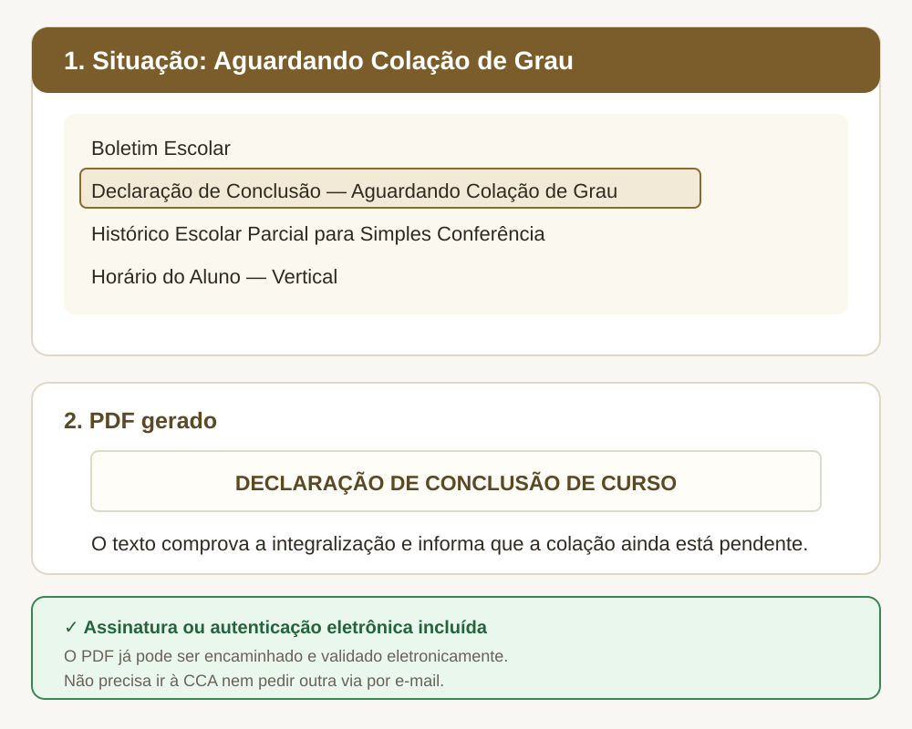

Passo a passo
- Acesse o Q-Acadêmico e escolha o módulo ALUNO.
- Entre com matrícula e senha.
- Abra Solicitar Documentos e clique em Nova Solicitação.
- Selecione Declaração de Conclusão — Aguardando Colação de Grau.
- Clique em Solicitar Documento e baixe o PDF.
Para quem é este guia
Esta orientação é exclusiva para estudante de curso superior cuja situação já aparece no sistema como Aguardando Colação de Grau. O acesso continua sendo feito pelo módulo ALUNO.
Sem carimbo, sem fila e sem e-mail. Os documentos emitidos diretamente pelo Q-Acadêmico já possuem assinatura ou autenticação eletrônica, com chave ou link para conferência. Não é necessário ir à CCA, pedir carimbo ou assinatura, nem solicitar outra via por e-mail.
Documentos disponíveis
- Boletim Escolar;
- Declaração de Conclusão — Aguardando Colação de Grau;
- Histórico Escolar Parcial para Simples Conferência;
- Horário do Aluno — Vertical.

Antes da colação
Guarde uma cópia do histórico parcial. Poucos dias antes da colação, gere e salve o Histórico Escolar Parcial para Simples Conferência. Depois que o vínculo migrar para EGRESSO, o histórico de curso superior deixa de ser gerado corretamente pelo sistema.
O histórico parcial não substitui automaticamente o histórico escolar definitivo. A instituição que receber o documento pode exigir a versão final.
Não confunda os documentos
| Documento | Quando usar |
|---|---|
| Declaração de Conclusão — Aguardando Colação | Antes da colação de grau. |
| Certidão de Conclusão de Curso | Depois da colação, no módulo EGRESSO. |
| Diploma Digital | Documento definitivo da graduação. |